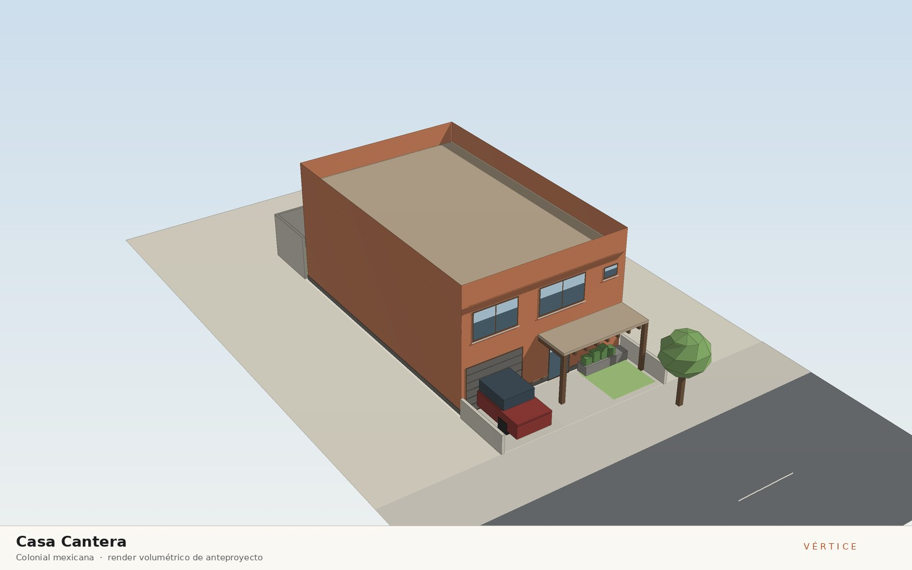
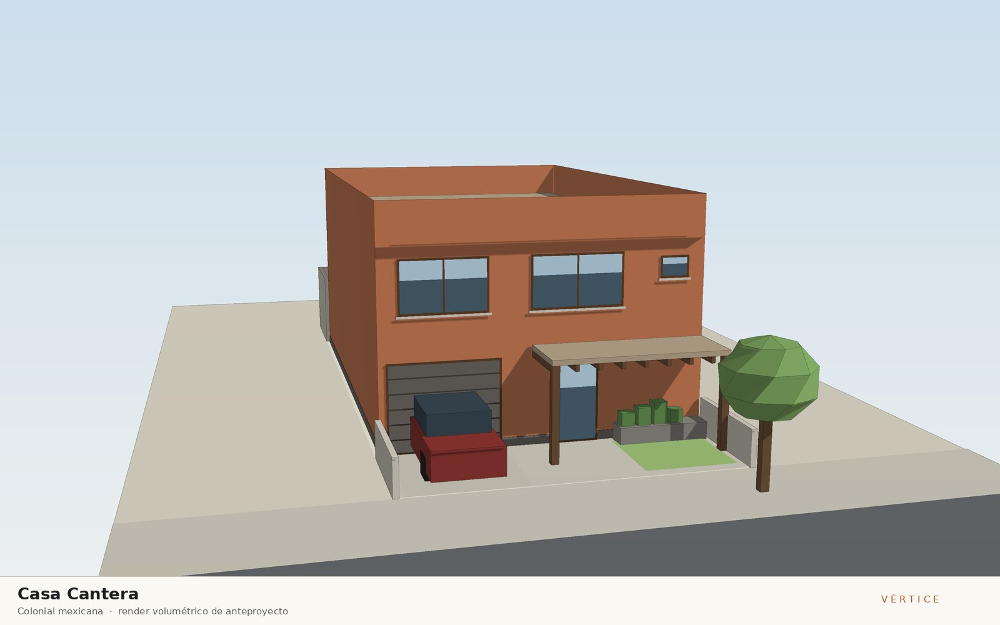
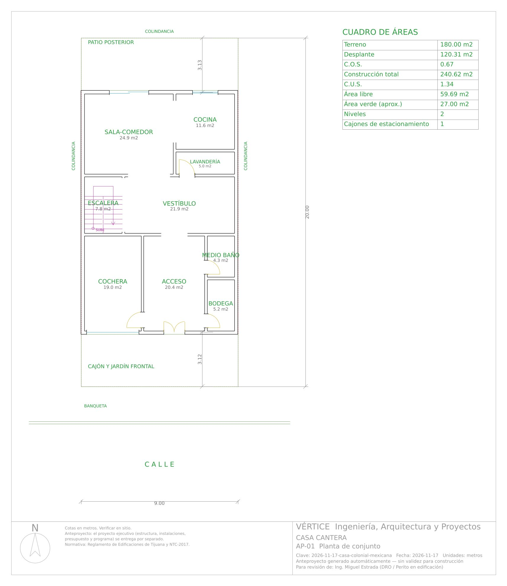
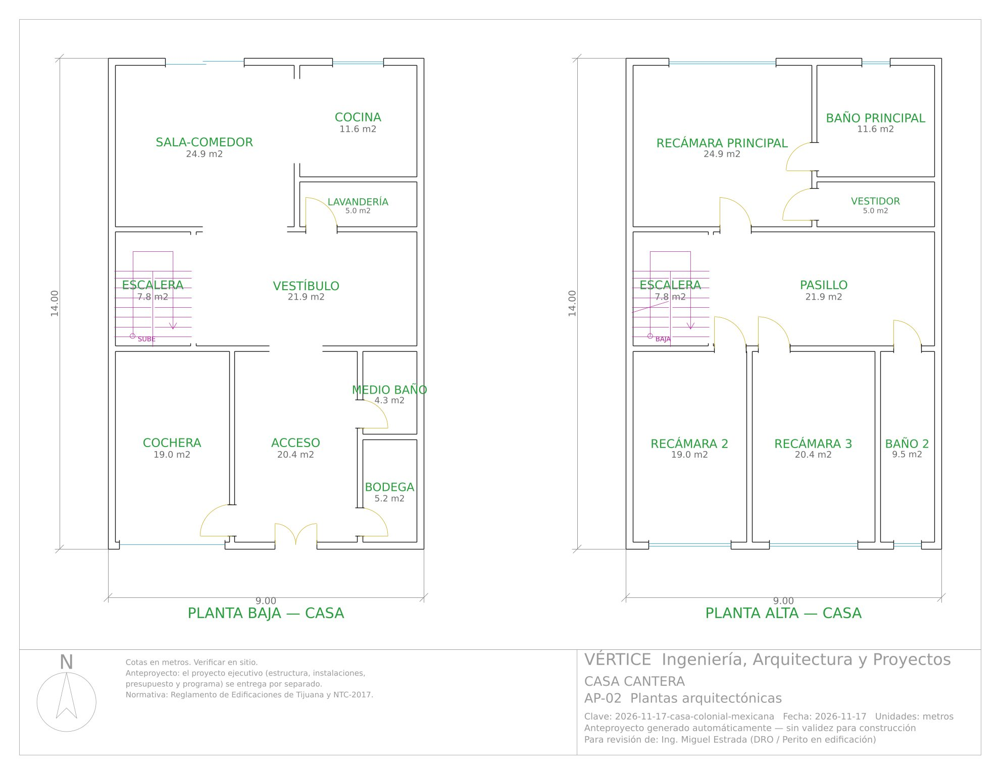
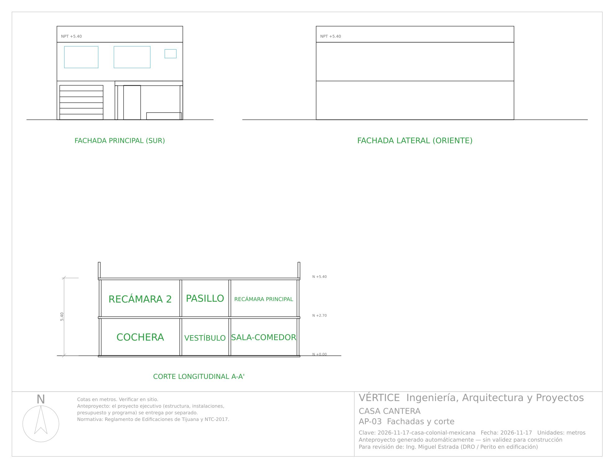

17 de noviembre de 2026 · Casa habitación
Casa Cantera
Corriente: Colonial mexicana

Concepto
Vivienda colonial mexicana en un lote angosto de 9 x 20 m que reinterpreta la casa novohispana de muros gruesos y pocos vanos para Tijuana: block aplanado a la cal en ocre tierra da masa térmica contra el sol del poniente y del sur, las fachadas laterales quedan ciegas sobre las colindancias y la principal se ordena con ventanas de proporción contenida (32 % de vano) enmarcadas en cantera rosa. Un portal de vigas de madera, como el de las casonas de pueblo, recibe al visitante, sombrea la puerta de acceso y remata en una jardinera de cantera al pie del muro. Hacia el norte, la sala-comedor se abre por un cancel corredizo al traspatio, que funciona como el antiguo patio de servicio: jardín de sombra y ventilación cruzada con la brisa marina. La azotea plana con pretil alto de 1.10 m oculta tinacos y equipos y conserva la silueta horizontal y sobria de la arquitectura virreinal.
Dictamen del arquitecto
- Terreno de 9.00 x 20.00 m (180 m²); casa de 8.75 x 13.75 m a ejes en 2 niveles, 240.6 m² construidos con desplante de 120.3 m²: COS 0.67 y CUS 1.34 (por verificar con el PDU de Tijuana). Muros laterales ciegos sobre colindancia (aplanado de mortero, sellador e impermeabilizante), restricción frontal con cochera de 1 cajón (3.40 x 5.60 m, portón seccional de 3.00 m) y traspatio al norte.
- Lenguaje colonial: volumen cúbico con azotea plana y pretil alto de 1.10 m (remate a +6.50 m) que oculta tinacos y equipos, ventanas de proporción contenida (32 % de vano) con marco y repisón de cantera rosa y herrería forjada, portal de madera de 1.80 m de fondo sobre la puerta doble de acceso de 1.20 m y jardinera de cantera al pie del muro. Se descartó el muro de acento: la fachada sur de 8.75 m no deja un paño ciego ≥ 0.90 m en ambos niveles.
- Recorrido: portal → acceso (20.4 m²) con paso a cochera, bodega (5.2 m²) y medio baño (4.3 m², sin ventana: lleva extractor obligatorio) → vestíbulo (21.9 m²) con escalera en U y lavandería (5.0 m²) → sala-comedor (24.9 m², 5.25 x 4.75 m) comunicada con la cocina (11.6 m²) y con salida al traspatio por cancel corredizo. Escalera de 1.15 m de ancho, peralte 16.9 cm, huella 30.2 cm (2p + h = 64 cm).
- Planta alta: pasillo (21.9 m²) que reparte a recámara principal (24.9 m², 5.25 x 4.75 m) con baño (11.6 m²) y vestidor (5.0 m²) al norte, recámaras 2 (19.0 m²) y 3 (20.4 m²) con clóset y baño 2 (9.5 m², con ventana) al sur. Todas las recámaras ≥ 2.70 m de lado con ventana al exterior; altura libre 2.57 m en ambos niveles (≥ 2.30 m).
- Cédula de acabados congruente con la corriente: piso de barro comprimido sellado en zonas secas y escalera, porcelanato antiderrapante en baños, cerámico en lavandería y concreto escobillado en cochera; 216.3 m² de piso iguales en planos y presupuesto (la partida de material ya dice barro comprimido, no porcelanato).
- Motor: (1) la cláusula de piso "piso de barro …, y azulejo de talavera en … baños" se descartaba entera por mencionar baños y la cédula, la escalera y el presupuesto caían en "Porcelanato 60x120 tono arena"; ahora se conserva la parte del piso (sin cambios en los 16 proyectos anteriores). (2) El porche se dibujaba en AP-03, A-05 y render pero sólo se presupuestaba con cubierta inclinada; ahora entra en "Por cotizar" con cualquier cubierta, incluida la azotea plana con pretil.
Dictamen de ingeniería
- Veredicto: construible conforme a norma — 0 errores y 0 avisos en las 29 verificaciones de coordinación; todos los muros apoyados en continuidad vertical y sin ajustes del ciclo de coordinación (muros de 15 cm en ambas direcciones), sujeto a los supuestos indicados abajo.
- Mampostería confinada (Q = 1.5): castillos K-1 (42 en planta baja y 43 en planta alta), dalas de desplante, cerramiento y pretil, y 9 cerramientos T-1 a T-9 de 15x30 a 20x30 cm (el más cargado, T-1 20x30 con 2 #6, L = 2.55 m, Mu 4.56 t·m). Método simplificado NTC: Y VR 90.3 t ≥ Vu 58.1 t; X VR 59.8 t ≥ 58.1 t con margen de sólo 3 %, por lo que no deben abrirse vanos ni recortar muros en dirección X sin recalcular. V basal 52.8 t con c = 0.213 supuesto y T = 0.17 s; muro más cargado X = 5.37 a 9,688 de 12,600 kg/m (77 %).
- Losas macizas de 13 cm en entrepiso (≥ 13.0 cm) y azotea (≥ 12.8 cm) con #3. Zapatas corridas h = 20 cm, B = 50 cm, #4 @ 33: ZC-1 perimetral (q = 5.56 t/m², excéntrica en los linderos oriente y poniente) y ZC-2 interior (q = 9.34 t/m², 78 % de la capacidad) contra una q adm supuesta de 12 t/m² a -0.80 m: requiere estudio de mecánica de suelos y confirmar el espectro sísmico del sitio. Cuantificación: 5,123 kg de acero (21.3 kg/m²) y 58.8 m³ de concreto.
- Instalaciones: 4 ocupantes, 0.6 m³/día, 22 UM (1.21 L/s), toma Ø13 mm, alimentación Ø25 mm, cisterna de 2 m³ con hidroneumático; 25 UD, bajadas del baño principal (a cocina) y del baño 2 (a bodega) junto a muro, colector Ø100 mm PVC al 2 % a la red CESPT con ventilación Ø50 mm; captación de 120 m², 3.3 L/s a 2 bajadas Ø100 mm (≈ 9 L/s) separadas del sanitario; 13 circuitos (12,378 W instalados, 8,665 W de demanda, 43.8 A), interruptor general 2P-60 A, desbalance 0.7 %; gas LP con tanque estacionario de 300 L en azotea, ventilado y a más de 3 m de flamas, red de cobre tipo L. Factibilidades de CESPT y CFE por tramitar.
- Presupuesto de $1,491,152 + IVA ($1,610,444 con IVA fronterizo; $6,197/m²) y programa de 18 semanas (104 días hábiles); portón seccional, cancelería de madera entintada, puerta de parota, porche de madera, jardinera de piedra y cocina integral quedan entre las 35 partidas de la hoja "Por cotizar" hasta tener cotización de proveedores de Tijuana.
Materiales
Muros de block de concreto con aplanado a la cal y pintura mineral color ocre tierra; marcos y repisones de ventanas, jardinera y zoclo exterior en cantera rosa de la región; portal con vigas y zapatas de madera de pino tratada y entintada; herrería forjada color negro en ventanas; cancelería de madera entintada nogal con vidrio doble; piso de barro comprimido sellado en portal, patio e interiores, y azulejo de talavera en salpicadero de cocina y baños
Vistas

Anteproyecto — descargas
Láminas del anteproyecto






Proyecto ejecutivo
Proyecto ejecutivo completo — 17 láminas. Se entrega por separado; no se publica en esta galería.
Revisión de coordinación arquitectura–estructura–instalaciones–acabados y normativa: Sin errores · 0 avisos en 29 verificaciones.
Arquitectónico
- A-01 Planta de conjunto
- A-02 Plantas arquitectónicas amuebladas
- A-03 Plantas acotadas a ejes
- A-04 Planta de azotea
- A-05 Fachadas
- A-06 Cortes arquitectónicos
- A-07 Cancelería y acabados
Estructural
- E-01 Planta de cimentación
- E-02 Losas, trabes y castillos
- E-03 Detalles estructurales
- E-04 Cuantificación de acero y concreto
Instalaciones
- IH-01 Instalación hidráulica
- IS-01 Instalación sanitaria y pluvial
- IE-01 Instalación eléctrica
- IG-01 Instalación de gas LP
- IH-02 Isométrico hidráulico
- IE-02 Cuadro de cargas y diagrama unifilar
Incluye: Memoria técnica (Word/PDF) · Presupuesto (Excel) · Programa de obra (Excel y Gantt) · Juego de planos (PDF y DXF)
Revisión de calidad
Sin errores · 1 avisos
| Tipo | Nivel | Observación |
|---|---|---|
| Aviso | Casa · Planta baja | Medio baño: ventilación mecánica (extractor) obligatoria. |
Cuadro de áreas
Ver los 17 espacios
| Bloque | Nivel | Espacio | Medidas (m) | Área (m²) |
|---|---|---|---|---|
| Casa | Planta baja | Cochera | 3.40 x 5.60 | 19.04 |
| Casa | Planta baja | Acceso | 3.65 x 5.60 | 20.44 |
| Casa | Planta baja | Bodega | 1.70 x 3.08 | 5.24 |
| Casa | Planta baja | Medio baño | 1.70 x 2.52 | 4.28 |
| Casa | Planta baja | Escalera | 2.30 x 3.40 | 7.82 |
| Casa | Planta baja | Vestíbulo | 6.45 x 3.40 | 21.93 |
| Casa | Planta baja | Sala-comedor | 5.25 x 4.75 | 24.94 |
| Casa | Planta baja | Lavandería | 3.50 x 1.43 | 4.99 |
| Casa | Planta baja | Cocina | 3.50 x 3.33 | 11.64 |
| Casa | Planta alta | Recámara 2 | 3.40 x 5.60 | 19.04 |
| Casa | Planta alta | Recámara 3 | 3.65 x 5.60 | 20.44 |
| Casa | Planta alta | Baño 2 | 1.70 x 5.60 | 9.52 |
| Casa | Planta alta | Escalera | 2.30 x 3.40 | 7.82 |
| Casa | Planta alta | Pasillo | 6.45 x 3.40 | 21.93 |
| Casa | Planta alta | Recámara principal | 5.25 x 4.75 | 24.94 |
| Casa | Planta alta | Vestidor | 3.50 x 1.43 | 4.99 |
| Casa | Planta alta | Baño principal | 3.50 x 3.33 | 11.64 |
Anteproyecto conceptual generado por el motor Vértice. El predimensionamiento estructural y los cálculos de instalaciones son preliminares y no sustituyen la memoria de cálculo definitiva, el estudio de mecánica de suelos ni la revisión y firma del DRO y corresponsables.